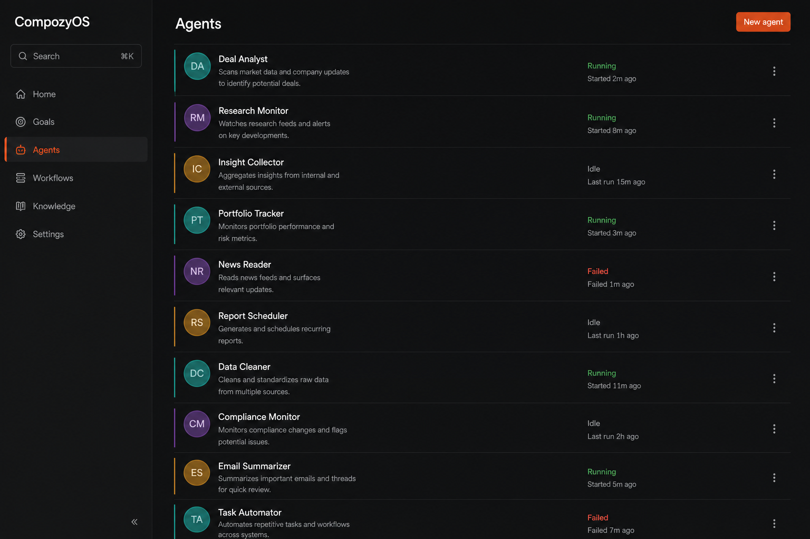

01
Dock · queue · drafts · field
one shape · squared corners · drafts sit in the fieldBusy turnPermission is daemon-owned. The queued row is a text follow-up the daemon already accepted. Draft images and files sit *in* the field — they have not been queued yet. ⏎ reads queue. Stop disc replaces send.
PermissionRun a command1/1
bunx turbo run lint typecheck test --filter=./web
Convert the states gallery to the marker vocabulary too


02
Queue without dock
qstrip still squares the field · images stay insideNo permissionThe strip is the only thing above the field. Attachments never migrate into the qstrip until the user queues this draft.
Also retone the marker components